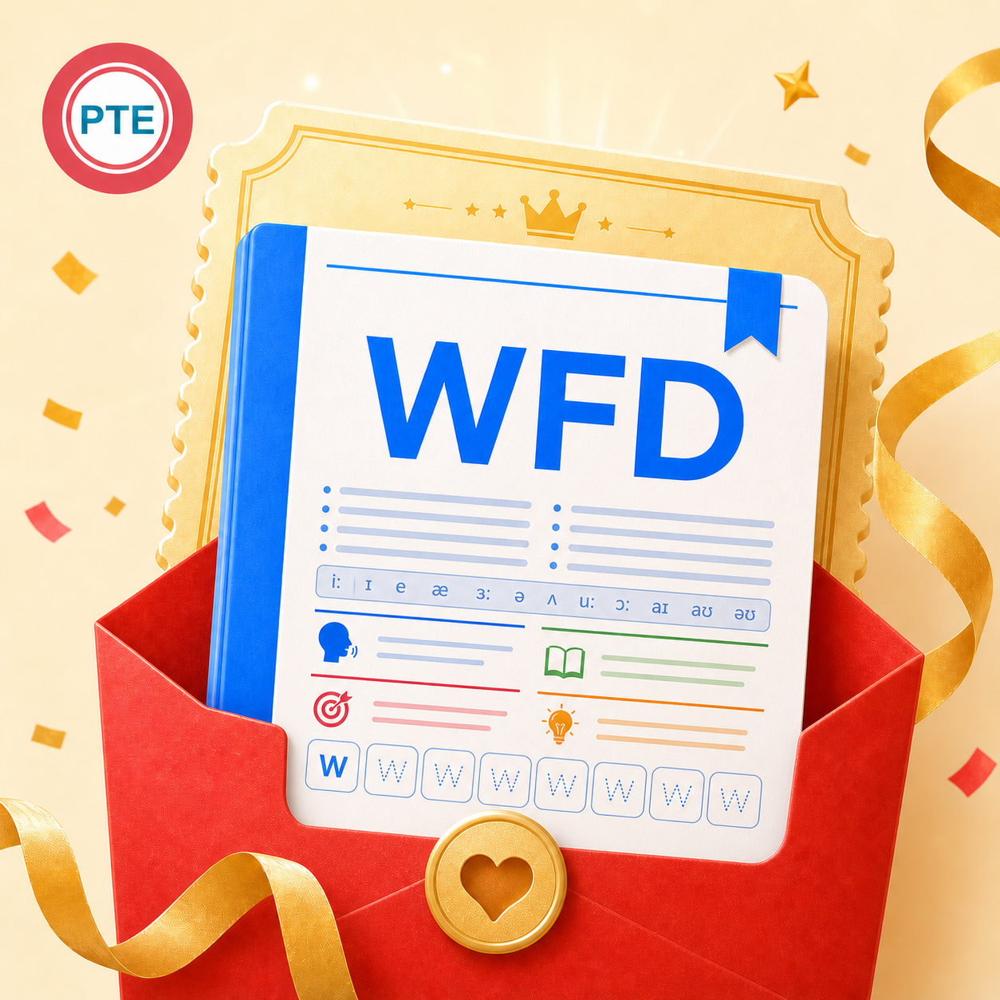

句子不长，信息密度高；听到后要迅速保留关键词和语序。
小圆 PTE 突击认真整理每一个得分点
WFD 专项Write From Dictation · 听写冲刺
恭喜宝宝，找到 WFD 突击神器！
围绕「全部 · 最新 · 高频」方向整理，把原句、发音、中文理解、分段记忆和首字母复现放进一份资料。少走弯路，把时间用在真正能练会的句子上。
纯 PDF 图文高频原句音标 + 翻译图标分段首字母复现

先看清这道题
听一遍，写完整。
每个正确单词都值得抢回来。
WFD 位于听力部分，短句只播放一次，需要按听到的内容准确输入。它同时考查听力与写作，正确单词按内容获得部分分，因此听辨、词序和拼写都很关键。
训练目标是边听边抓骨架，而不是反复依赖回放。
能多写对一个词，就多守住一个得分点；完整度与准确度一起练。
资料长这样
从“看懂”到“默出来”，
每一步都有抓手。
参考商品资料页的训练结构，一条句子拆成五层信息，适合快速过题与重复复习。
A group meeting will be held tomorrow in the library conference room.
① 原句 + 音标 借助音标确认读音
② 中文翻译 先理解，再记忆
③ 图标分段 按意义组块记住长句
④ 首字母 A g m w b h t i t l c r
- 听原句与音标配套
解决“认识单词却没听出来”的卡点。 - 懂中文翻译辅助理解
有语义支撑，记忆更牢，词序更自然。 - 拆图标 + 意群分段
把长句拆成几个可抓住的小块。 - 默首字母主动回忆
从“看着会”推进到真正能复现。
真实截图
WFD 资料内页展示
原句、音标、中文翻译、分段图标与首字母提示都在同一页呈现。

本商品仅提供 PDF 图文资料，不包含音频、视频、录音或跟读服务。
为什么适合突击
用更短的路径，练到考场需要的动作。
先覆盖更值得投入的句子，有限时间里把复习顺序排清楚。
文字、发音、中文、图标和首字母一起上，减少机械死背。
遮住原句，只看首字母复述；再回看拼写，形成闭环。
建议这样冲
三轮循环，比从头看到尾更有效。
第 1 轮
快速过题，标记陌生句
先理解句意、熟悉发音，把卡壳的词和意群圈出来。
第 2 轮
图标分段，首字母复现
遮住原句，根据分段和首字母完整说出或写出句子。
第 3 轮
只查错题，专攻拼写
集中回炉遗漏词、词序和拼写错误，把时间留给薄弱点。
购买后如何领取
安全验证，生成你的专属 PDF。
购买后进入对应领取链接，系统按商品入口生成专属文件。
填写中国大陆手机号
获取并输入短信验证码，确认是你本人领取。
填写小红书订单号
订单号格式为 P 开头加 18 位数字，请从订单详情复制。
生成专属水印文件
系统为资料每一页加入完整手机号与“祝考试好运 UPUP”水印。
下载并及时保存
生成成功页会显示具体北京时间，建议在生成后 14 天内完成下载。
为生成和保护你的专属资料，系统会保存手机号和订单号，并在资料每一页添加完整手机号水印。题库按当前资料版本整理，实际考试题目以考场为准。
早用一天，
多背亿点！
如果觉得有用，就拿下吧！有任何问题欢迎联系小圆——助力每个突击 PTE 的小伙伴实现梦想～
拿下 WFD 宝藏资料